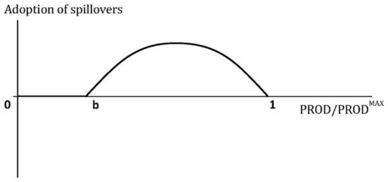

On the Intensity of International Subsidy Competition for FDI
Tomas Havranek, Zuzana Irsova (2010), "On the Intensity of International Subsidy Competition for FDI." Theoretical and Applied Economics 17(2): 25-54. https://www.ectap.ro/articol.php?id=440.
Theoretical and Applied Economics, Volume XVII (2010), No. 2(543), pp. 25-54
Tomáš HAVRÁNEK, Charles University and Czech National Bank, Prague, tomas.havranek@ies-prague.org
Zuzana IRŠOVÁ, Charles University, Prague, zuzana.irsova@gmail.com
JEL Codes: C21, C23, F21, F23, H25.
REL Code: 8N, 18B.
Keywords: investment incentives, foreign direct investment, panel data, subsidy competition.
Abstract
The objective of this paper is to empirically assess the recently introduced models of subsidy competition based on the classical oligopoly theories. Three crucial scenarios (coordination, weak competition, and fierce competition) are tested employing iteratively re-weighted least squares, fixed effects, and dynamic Blundell-Bond estimator on the data from the World Competitiveness Yearbook. The results suggest that none of the scenarios can be strongly supported – although there is some weak support for cooperation –, and thus that empirical evidence is not in accordance with the tested models. There is no evidence for a significant international competition for FDI. It seems that, however, by means of FDI incentives, governments try to compensate foreign investors for high wages and low productivity of their countries’ labor force.
1. Introduction
Although over a few recent years we might have been witnessing a stagnating interest of economic theorists in foreign direct investment incentives – and some countries seemingly saturated with foreign direct investment, e.g., the Czech Republic, have even been considering reducing the benefits for some types of foreign investors –, it is likely that the ongoing economic crisis will once again bring the topic to the sunlight of the international financial community's focus, as worldwide foreign direct investment (FDI) is expected to drop significantly (UNCTAD, 2009). Taking the present conditions into account, it is important to study not only the effectiveness of investment incentives per se, but, aside from the traditional macroeconomic view, also the microeconomic motivation which leads governments to use these instruments of attracting foreign investors.
There are two rich streams of empirical literature related to the present paper. The first one concerns in FDI determinants (for a review, see, e.g., Blonigen, 2005), where the volume of inward FDI can be explained – among other things – by corporate income tax rates and sometimes also proxies for investment incentives. The second stream of research focuses on empirical estimation of tax competition (for instance, Devereux et al., 2008; Ghinamo et al., 2008), where countries’ tax rates are influenced, aside from other factors, by FDI inflows and outflows or other countries’ tax rates. However, to our knowledge, there is no empirical study concerning specifically with the determinants of foreign direct investment incentives – i.e., taking FDI incentives as a response variable.
In this paper, we intend to empirically test the predictions of the models of subsidy competition and supply of FDI incentives recently presented in Havránek (2009) and compare it to the results of Havránek (2007), who tested older versions of these models using very basic cross-sectional methods. The theoretical models distinguish cases of cooperation, weak competition, and fierce competition; simple hypotheses can be formulated to test for each of the scenarios separately. We employ iteratively re-weighted least squares (Hamilton, 2006) for cross-sectional data and dynamic Blundell & Bond (1998) methodology for panel data. We do not select any particular model but use all the estimates obtained employing different approaches to get a more stable overall outcome.
The present paper is structured as follows: in Section 2, we summarize the theoretical models and formulate the most important hypotheses. Section 3 describes the dataset that we have at our disposal and discusses variables constructed on the basis of the data. In Section 4, the employed econometric techniques and tests are described. Section 5 presents the results and a corresponding discussion. Section 6 concludes the paper and lists a few limitations of the used methodology.
2. Hypotheses
There are two main methodological approaches in Havránek (2009). The first one is called “Minimal sufficient investment incentive model” and predicts sharp competition between governments up to the point where one country gives up or where both countries have zero utility from attracting the foreign investor. It is based on a simple comparison of alternative profits – there are 2 countries and a monopolistic investor; the MNC invests in the country which assures him the highest return possible and the countries try to match their attractiveness with their rival. The other one is called “Optimal investment incentive model” and does not conclude that the competition between rival countries necessarily has to be strong enough to shift all the benefits emanating from FDI spillovers to the foreign investor. This model is based on classical oligopolic theories, where investment incentive is viewed as a commodity (i.e., governments are oligopolies competing among each other). Finally, these models are integrated into a more general one.
There are several possible outcomes of the general model. Either the governments choose cooperation (which is equivalent to some sort of supranational coordination in this case – this is in fact a special case of the Optimal investment incentive model), or they both behave according to other versions of the models (the Minimal sufficient investment incentive model or the “free competition version” of the Optimal investment incentive model), or each government uses a different strategy. Surely, another possibility should be added: that in reality the competition does not follow any of the models developed in Havránek (2009). Thus we obtain the following set of outcome scenarios:
Scenario 1 There exists an effective supranational coordination or governments are cooperating.
Scenario 2 The competition proceeds according to the “free competition version” of the Optimal investment incentive model. Based on the discussion in the original paper, it can be labeled as weak competition.
Scenario 3 One country uses the Optimal investment incentive model, the other relies on the Minimal sufficient investment incentive model.
Scenario 4 The competition proceeds according to the Minimal sufficient investment incentive model. It can be labeled as fierce competition.
Scenario 5 None of the models explains subsidy competition reasonably well.
In the original paper, Scenario 3 was found to be highly improbable with respect to the other options (it is much less stable); therefore, we will not test for it. Concerning the others, there is a large number of propositions raised by Havránek (2009) that can be straightforwardly tested. First, let us concentrate on Scenario 4. This means that the Minimal sufficient investment incentive model has to be tested. The central equation for this model is
where stands for tax relief, ENT stands for the relative quality of entrepreneurial environment in Country 1 with respect to Country 2, M is duration of the investment, and is the corporate income tax (CIT) rate; see Havránek (2009) for details. The following hypotheses can be raised to support Scenario 41 (detailed explanations of all variables used in this study can be found in Section 3):
- Provision of investment incentives is a decreasing function of the quality of entrepreneurial environment (based on Proposition 1). : ENT ↓
- Provision of investment incentives is an increasing function of labor costs (based on Proposition 2). : k ↑
- If country’s entrepreneurial environment is better than that of its rival, provision of investment incentives is an increasing function of the CIT rate (based on Proposition 3, “Strong competition”). : ENT > 1 => ↑
- Provision of country’s investment incentives is an increasing function of investment incentives provided by its rival (based on Proposition 4, “Regime competition”). : ↑
The hypotheses for Scenario 4 can be summarized as follows:
Three of the hypotheses are unconditioned, one is conditioned – it will be tested on a subsample of countries for which the condition applies. We simplified the concept of entrepreneurial environment (ENT) in the model to n/k (details are to be found in Section 3). Concerning Scenario 2, the Optimal investment incentive model (to be more specific, its “free competition version”) is used. The central equation of the model is
where stands for investment incentives, SPILL stands for spillovers, RET return on investments, CIT for the corporate income tax rate, and the rest are demand parameters. The corresponding hypotheses are the following:
- Provision of investment incentives is an increasing function of FDI spillovers (based on Proposition 6). : SPILL ↑
- The CIT rate has an ambiguous effect on the provision of investment incentives. However, if the influence of country’s own CIT rate is negative, the influence of its rival's CIT tends to be positive, and vice versa (based on Proposition 8). : ↑ <=> ↓, ↓ <=> ↑
- If country’s CIT rate exceeds at least one half of its rival country’s CIT rate, then the provision of investment incentives is a decreasing function of the return on investments (based on Proposition 7). : > ½ => RET ↓
The hypotheses for Scenario 2 can be summarized as follows:
Let us turn our attention to Scenario 1. This is a special case of the Optimal investment incentive model, labeled as “supranational coordination”. The central equation of the model is
The hypotheses are the same as for Scenario 2, with the exception of the last one which now changes to the following statement:
- If country’s CIT rate exceeds its rival country’s CIT rate, then the provision of investment incentives is a decreasing function of the return on investments (based on Proposition 11). : > => RET ↓
The hypotheses for Scenario 1 can be summarized as follows:
It is apparent that the hypotheses behind Scenario 1 and Scenario 2 are very similar and that it will be difficult to distinguish between the two cases.2 Nevertheless, we believe that it is still meaningful to consider these two scenarios separately. Finally, the hypothesis consistent with Scenario 5 is simple:
- No other scenario can be supported, which would be the case if our findings did not support (or did even reject) majority of hypotheses for any of the 3 other scenarios, or if the resulting support for hypotheses was in logical contradiction (for instance, if was supported and was not).
3. Data and Variables Description
One reason why there probably has not been any study estimating determinants of the provision of investment incentives is that it is very difficult to obtain some reliable data on the subject. Not surprisingly, most governments do not publish data on how much money they provided to foreign investors – the field seems to be quite competitive. And even if they did with good faith, it would still be questionable, since there are many forms of government support that cannot be directly quantified. Governments can simply provide cash to the investors, but they can also offer fuzzier fiscal incentives, lower tax rates for MNC’s employees, infrastructure construction, temporary wage subsidies, administrative help, easing of environmental or labor-market related requirements, and so forth (see, inter alia, OECD, 2003).
Being aware of the fact that there are – at least to our knowledge – no hard data on the variable we are most interested in, we have to choose an alternative methodology. In the World Competitiveness Yearbook, attractiveness of investment incentive systems in many countries is evaluated every year. The evaluation has the form of research survey; i.e., investors are asked which incentive systems they find more attractive and which less. The scale is 0-10, 0 for lowest attractiveness, 10 for the best incentives. It has to be admitted that this is not an ideal measure of investment incentives, nevertheless it is probably the best available one and should, in our opinion, approximate the “real” variable even better than some hypothetical official data provided by governments.
We use the World Competitiveness Online database with time span 1997–2006 as the source of our data (with the exception of variable ENT which was obtained from World Banks’ World Development Indicators). There are 61 cross-sectional units in the dataset, but some of them are provinces of countries already included in the dataset (Bavaria, Catalonia, Île-de-France, Lombardy, Maharashtra, Sao Paulo, Scotland, Zhejiang), hence we will exclude them from our dataset, since we have data on their mother countries at our disposal. World Competitiveness data are also strongly unbalanced and we have to exclude Bulgaria, Croatia, Estonia, Jordan, Luxembourg, Romania, Slovakia, Slovenia, Venezuela, and year 2006 to get a balanced panel.3 Finally, we are left with 44 countries observed between 1997-2005.
The explanatory variables needed for tests of the hypotheses raised in Section 2 are the following (the shortcuts that we use later in the regression model are typeset in bold):
k The relative price of labor power in the original model. However, it is useful to adjust it for different labor productivity in rival countries. Therefore, the definition we use here is
where is labor productivity (GDP in USD at PPP per person employed per hour) for country i and year t, stands for labor costs (wages + supplementary benefits, USD) in country i and year t, and the other variables correspond to the rival country. The higher k is, the less competitive our country becomes with respect to the rival country and vice versa.
SPILL The value of spillovers that country receives from foreign direct investment in the original model. This is the most problematic variable to measure (even more than investment incentives), since there is not even a consensus upon whether productivity spillovers from FDI are positive and/or significant.4 Nevertheless, there are theoretical approaches to measure the absorption capacity of economies with respect to FDI spillovers. For example, we can use a measure that could be called “macro-level technology gap”:
which is based roughly on Kokko (1994) (here defined at the macro level, however; much more about technology gap can be found in Sjöholm, 1999). stands for labor productivity in country i and year t, for the highest labor productivity in the sample for year t. The standard hypothesis is that broader technology gap prevents the economy from receiving FDI spillovers (thus we can use – TGAP in our model as a measure of positive spillovers). Another way – and that is what we focus on – can be to rely on the knowledge adoption concept. In this paper, we apply the knowledge adoption function used by Papageorgiou (2002).5 The function is described by (9) and depicted in Figure 1.

It should be noted that Papageorgiou (2002) does not deal with FDI spillovers directly in his paper; he employs a general knowledge/technology adoption concept. We use this function because we believe that it could describe the absorption capacity of economies reasonably well. Significantly undeveloped countries have no or very limited possibility to enjoy productivity spillovers from foreign investments, because the technological difference between investors and domestic firms are too large to be overcome ceteris paribus. The coefficient b determines how productive (relatively to the most productive country in the sample) a country has to be to begin exploiting FDI spillovers. We consider 2 different values of b, specifically 0.25 (forming variable SPILLA) and 0.5 (variable SPILLB).
ENT Relative “quality of entrepreneurial environment”. As defined in the original model, it is a rather complex formula covering market size, labor costs, transaction costs, and demand parameters. For the purpose of this paper, we decided to simplify the formula to n/k, where n stands for the relative size of country’s market (the country has n-times higher GDP in terms of purchasing power parity than its rival), and k for the relative price of labor (adjusted for different labor productivity, see above). If n/k exceeds 1, we conclude that country’s entrepreneurial environment is better than that of its rival.6 This approximately covers the idea of “entrepreneurial environment” in Havránek (2009).
CIT1 Statutory corporate income tax in the country.
CIT2 Statutory corporate income tax in the rival country.
RET Rate of return on investment. The assumption in the original model (rather restrictive) is that the country and its competitor have the same rate of return on investments. In our case, that would mean the same rate of return for all the countries (countries do not necessarily create “competing pairs”, one country can be the rival for many others, see the concept of rival country below), but then it would not be meaningful to include rate of return into the regression since we would have only observations from 9 years at our disposal. Therefore, we decided to split the sample into 3 parts according to the geographical position of the countries – the Americas, Europe (+ Middle East), and Asia (+ Oceania). Variable RET for each country is then driven by real interest rate of the leading financial power of the group: USA for the Americas, Eurozone for Europe, and Japan for Asia. Because in almost all cases countries compete within these groups, the model’s assumption is not violated in principal.
INI1 Foreign direct investment incentives in the country.
INI2 Foreign direct investment incentives in the rival country.
Rival country. When constructing the variables, one of the most important concepts was the definition of “rival country”. Probably the easiest and most intuitive way is to combine the geographic and cost perspectives. Let us imagine, for instance, an automobile manufacturer planning its investment in central Europe. It certainly considers the cost and productivity of labor (the higher PROD/WAGES, the better), but it also highly values proximity to its main markets – logistics plays a significant role (not only) in the auto industry. Thus we can often witness two neighboring countries, similar in productivity and labor costs, competing for an investment.
Based on this example, we constructed the following mechanism: preferably, the rival country to country i should be one of its neighbors. Among them, the one with ratio PROD/WAGES closest to that of country i is chosen. If there is no neighbor of country i in our sample or if country i is an island, we choose from the group of 3 countries that are closest to its shore. Generally, the result of this algorithm might vary each year for a particular country. We made the simplification of computing the result only for year 2005 and holding the rival country constant through time span 1997-2005.
Control variables. In the World Competitiveness Online database, there are other variables that could significantly influence the level of provided investment incentives as well. We concentrated on the following 5 of them:
FDI Total stock of inward FDI divided by total GDP (PPP). The hypothesis we raise is that country saturated with FDI is less willing to provide substantial incentives to foreign investors. : FDI ↓
RISK Defined as the risk of relocation of production facilities from the country. It can be assumed that the higher risk of relocation the government feels, the higher incentives it is willing to provide to foreign investors. : RISK ↑
CLEG Efficiency of competition legislation in preventing unfair competition. The hypothesis is that countries with poor legislation have to provide much higher incentives to foreign investors as an offset. : CLEG ↓
BUDGET Country’s budget surplus/deficit. The hypothesis is that countries with substantial budget deficits are not able or willing to provide high investment incentives. : BUDGET ↑7
GDPG Real GDP growth in the country. We expect that countries experiencing fast GDP growth do not need FDI as much as countries with sluggish growth, hence they will also not desire to provide high investment incentives. : GDPG ↓
4. Methods of Estimation
In an attempt to test the hypotheses introduced in Section 2, we construct a linear regression model. We use both cross-sectional techniques for 2005 and panel data approaches for the whole time span 1997-2005. First, it appears that variables BUDGET and GDPG do not bring any value added to explaining variance in in any of the specifications that we employ. Since we only intended to use them as control variables and they are not important for the testing of our main hypotheses, we exclude them from the regression. Therefore, the model reduces to
where we have i = 1,…,44; t = 1997,…,2005.
Acronyms of all used variables can be found in Table 7 in the Appendix and their detailed description in Section 3. The specification introduced in (10) will be called complete. The pure specification will label the situation when we exclude all 3 control variables (FDI, RISK, CLEG) from the model and keep only those regressors that we need to test the hypotheses from hyp. The best specification will be unique for each method of estimation and will be formed in such a way that the resulting model includes as many significant explanatory variables as possible.8 Some of our hypotheses are conditioned; therefore, we need to define the conditions we are using:
Condition 1 ENT > 1
Condition 2 CIT1 > ½ CIT2
Condition 3 ENT > CIT2
Apart from SPILLA, we will also try to use alternative measures for spillovers, namely SPILLB and TGAP. It should be noted that TGAP is a measure for negative spillovers, since the theory suggests that the higher technology gap, the lower opportunities for domestic firms to benefit from inward foreign direct investment. As a consequence, we should observe opposite signs of the estimates for SPILLA (or SPILLB) and TGAP. The alternative measures will be applied to the complete model and if the model shows higher performance, these alternatives will be used in other specifications as well.
Cross-sectional methods. We start with the year 2005 and standard cross-sectional approaches, beginning with OLS. We have 44 observations at our disposal; all computations were conducted in Stata 10. First, let us focus on the problem of collinearity. Table 8 in the Appendix shows correlation coefficients between explanatory variables. None of them exceeds 0.5, which is a safe value. The condition number of the complete model reaches 43.8, which is above the usual threshold of 30 – nonetheless, it is not drastically excessive and in other specifications falls well below 30 (24.5 for the best model). Considering possible non-linear relationships, we use the Weierstrass Approximation Theorem (see Víšek, 1997, p. 71) and estimate J following regressions [we regress powers of explanatory variables of (10) on each other; t = 2005]:
We computed (11) with J = 10 and P = 6, the coefficients of determination of such regressions are listed in Table 1 together with what is usually called linear redundancy (i.e., with P = 1). Most of the values oscillates around 0.5, the highest number is 0.69, which is also not excessive – thus we can conclude that, although there is some increase compared to linear redundancy, non-linear dependencies among explanatory variables should not represent a significant problem in our regressions.
| Variable | Linear | Polynomial |
|---|---|---|
| Relative price of labor | 0.12 | 0.45 |
| Spillover absorption capacity (b = 0.25) | 0.21 | 0.49 |
| Quality of entrepreneurial environment | 0.14 | 0.45 |
| Corporate income tax | 0.34 | 0.59 |
| Rival's corporate income tax | 0.24 | 0.50 |
| Return on investment | 0.15 | 0.35 |
| Rival's investment incentives | 0.28 | 0.52 |
| FDI stock on GDP | 0.38 | 0.69 |
| Risk of relocation | 0.10 | 0.37 |
| Efficiency of competition legislation | 0.27 | 0.66 |
To deal with possible heteroscedasticity of disturbances, we employ heteroscedasticity robust standard errors computed with the Huber-White sandwich estimator, see Huber (1967) and White (1980). In order to test for normality of disturbances of the complete model, we use the Shapiro-Wilk test, which unfortunately rejects the null hypothesis at the 5% level. We tried to employ several transformations, but the result did not change significantly. Ramsey RESET test (which tests for omitted variables and can be also interpreted as a test of linearity) does not reject the null hypothesis of no omitted variables at the 5% level. These tests provide us with identic results in the case of the best model as well.
The results of OLS estimation can be found in Table 2. One the one hand, the coefficient of determination oscillates around 0.5, which is not a small number considering the nature of the data. On the other hand, there are only few significant explanatory variables. The best model was obtained by gradual excluding the most insignificant explanatory variables until further exclusions would lower the number of significant (at the 10% level) regressors. It should be also noted that applying Condition 1 and Condition 3, we obtain only 17 (and 16, respectively) observations we can use – this does not give us enough degrees of freedom to take these regressions very seriously. Conversely, Condition 2 is much less restrictive and leaves 43 observations for the regression.
Until now, we did not discuss data contamination, and OLS was performed using all observations as a benchmark case. Now let us focus on a robust method – iteratively re-weighted least squares (IRLS). Details about this estimator can be found for example in Hamilton (2006, pp. 239-256). It can be explained easily in the following way: first, OLS is estimated and we exclude observations with Cook’s distance higher than 1. Then we calculate weights using a Huber function – it assigns lower weights to observations with large residuals. We perform weighted least squares and after a few iterations, we shift the weight function to a Tukey biweight function tuned for 95% Gaussian efficiency. For estimating standard errors and testing hypotheses, IRLS uses a pseudovalues method that does not assume normality.
| Complete | Spillb | Tgap | Cond. 1 | Cond. 2 | Cond. 3 | Best | Pure | |
|---|---|---|---|---|---|---|---|---|
| k | 0.763 | 0.688 | 0.664 | -0.515 | 0.792 | 3.539 | 0.838† | 1.316† |
| (1.37) | (1.23) | (1.2) | (-0.26) | (1.41) | (1.43) | (1.72) | (2.00) | |
| spilla | -3.820 | -11.19 | -2.145 | -4.924 | -3.793 | -0.255 | ||
| (-1.21) | (-1.62) | (-0.67) | (-0.91) | (-1.25) | (-0.08) | |||
| ent | 0.0126 | 0.0227 | 0.0243 | 0.0946 | 0.0140 | 0.0342 | 0.0228 | |
| (0.23) | (0.42) | (0.42) | (0.52) | (0.26) | (0.26) | (0.34) | ||
| cit1 | -0.0536* | -0.0496† | -0.0550* | -0.0176 | -0.0401 | -0.0719 | -0.0531* | -0.0790** |
| (-2.32) | (-1.89) | (-2.12) | (-0.24) | (-1.69) | (-0.75) | (-2.57) | (-2.72) | |
| cit2 | -0.00309 | 0.000475 | 0.00275 | -0.0326 | 0.00168 | 0.0277 | -0.00054 | |
| (-0.09) | (0.01) | (0.08) | (-0.28) | (0.05) | (0.36) | (-0.02) | ||
| ret | 0.395 | 0.346 | 0.139 | 1.559 | 0.552 | -1.069 | -0.0146 | |
| (0.41) | (0.34) | (0.15) | (0.57) | (0.58) | (-1.02) | (-0.01) | ||
| ini2 | 0.0493 | 0.0350 | 0.0457 | 0.147 | 0.0594 | -0.168 | -0.2 | |
| (0.22) | (0.16) | (0.20) | (0.18) | (0.28) | (-0.42) | (-0.91) | ||
| fdi | 0.700* | 0.715* | 0.736† | 1.759 | 0.572* | -0.533 | 0.710* | |
| (2.36) | (2.05) | (1.96) | (0.34) | (2.27) | (-0.22) | (2.64) | ||
| risk | -0.293* | -0.302* | -0.278† | -0.579 | -0.339 * | -0.304 | -0.258* | |
| (-2.26) | (-2.28) | (-2.03) | (-0.93) | (-2.66) | (-0.42) | (-2.28) | ||
| cleg | 0.358† | 0.328† | 0.360† | 0.368 | 0.322 | -0.174 | 0.330* | |
| (1.91) | (1.73) | (1.83) | (0.44) | (1.68) | (-0.63) | (2.22) | ||
| spillb | -4.615 | |||||||
| (-0.65) | ||||||||
| tgap | 0.547 | |||||||
| (0.76) | ||||||||
| Constant | 1.973 | 1.984 | 2.278 | -3.091 | 0.699 | 8.638 | 3.691** | 8.164* |
| (0.46) | (0.46) | (0.53) | (-0.18) | (0.17) | (1.76) | (3.83) | (2.29) | |
| Observations | 44 | 44 | 44 | 17 | 43 | 16 | 44 | 44 |
| R2 | 0.492 | 0.476 | 0.476 | 0.526 | 0.462 | 0.769 | 0.485 | 0.285 |
t statistics in parentheses Note: Computed using heteroscedasticity robust (Huber-White sandwich est.) t statistics † p < 0.1, * p < 0.05, ** p < 0.01
| Complete | Spillb | Tgap | Cond. 1 | Cond. 2 | Cond. 3 | Best | Pure | |
|---|---|---|---|---|---|---|---|---|
| k | 0.375 | 0.449 | 0.286 | -0.613 | 0.446 | 0.295 | 1.311† | |
| (0.64) | (0.74) | (0.50) | (-0.25) | (0.79) | (0.11) | (1.95) | ||
| spilla | -4.534 | -12.02 | -2.728 | -46.31† | -0.107 | |||
| (-1.39) | (-1.16) | (-0.82) | (-2.28) | (-0.03) | ||||
| ent | 0.00026 | 0.0109 | 0.0118 | 0.0914 | 0.00297 | -0.206 | 0.019 | |
| (0.00) | (0.19) | (0.21) | (0.51) | (0.05) | (-2.06) | (0.29) | ||
| cit1 | -0.0469† | -0.0426 | -0.0407 | -0.0174 | -0.0341 | 0.47 | -0.0483† | -0.0742* |
| (-1.71) | (-1.40) | (-1.49) | (-0.17) | (-1.23) | (2.01) | (-1.80) | (-2.46) | |
| cit2 | 0.0259 | 0.0188 | 0.0348 | -0.04 | 0.0291 | -0.328 | 0.00624 | |
| (0.94) | (0.66) | (1.27) | (-0.28) | (1.09) | (-2.10) | (0.19) | ||
| ret | 0.881 | 0.707 | 0.598 | 1.346 | 0.933 | -9.024† | -0.0394 | |
| (1.02) | (0.77) | (0.61) | (0.40) | (1.11) | (-2.24) | (-0.04) | ||
| ini2 | 0.222 | 0.15 | 0.236 | 0.119 | 0.216 | -1.373* | -0.159 | |
| (1.10) | (0.71) | (1.17) | (0.13) | (1.11) | (-2.78) | (-0.77) | ||
| fdi | 0.672 | 0.677 | 0.738 | 1.568 | 0.567 | 7.900 | 0.711† | |
| (1.60) | (1.50) | (1.66) | (0.27) | (1.38) | (1.62) | (1.77) | ||
| risk | -0.245 | -0.274 | -0.231 | -0.556 | -0.291† | 0.0177 | -0.278† | |
| (-1.48) | (-1.58) | (-1.34) | (-0.69) | (-1.79) | (0.07) | (-1.89) | ||
| cleg | 0.483** | 0.404* | 0.501* | 0.393 | 0.427* | -0.506 | 0.317* | |
| (2.92) | (2.35) | (2.69) | (0.48) | (2.65) | (-2.13) | (2.34) | ||
| spillb | -4.315 | |||||||
| (-0.58) | ||||||||
| tgap | 0.832 | |||||||
| (0.96) | ||||||||
| Constant | -1.817 | -0.721 | -2.155 | -1.808 | -2.537 | 42.40† | 4.040** | 7.662† |
| (-0.47) | (-0.18) | (-0.55) | (-0.09) | (-0.66) | (2.59) | (3.38) | (1.95) | |
| Observations | 44 | 44 | 44 | 17 | 43 | 15 | 44 | 44 |
| R2 | 0.477 | 0.436 | 0.457 | 0.417 | 0.447 | 0.956 | 0.394 | 0.234 |
t statistics in parentheses † p < 0.1, * p < 0.05, ** p < 0.01
Estimates with the help of IRLS are summarized in Table 3. Results are quite different from OLS, that is why we suspect there can be influential outliers in the data and decide to rely more on IRLS.
Panel data techniques. Now let us turn our attention to the whole period 1997-2005. First, we perform a test of poolability using a variant of the Chow test with fixed effects as the null hypothesis. The test of poolability is important, because fixed effects also impose restrictions on the structure of the model, and it is not sufficient to employ only Hausman test to choose between fixed effects and random effects (see Baltagi, 2005, p. 19). The Chow test does not reject the null hypothesis at the 5% level; therefore, pooling of our data does not seem unreasonable. Then we employ the Hausman test to determine whether or not it would be more appropriate to use the random effects model instead of fixed effects. The resulting test statistics is 53.4, thus the null hypothesis is rejected powerfully – we should use the fixed effects estimator.
We would like to identify at least the most influential outliers in our data, thus we choose the following approach: pooled OLS is performed and Cook’s distance and residuals computed for each observation. In the next step, we order observations according to the absolute value of residuals and Cook’s distance. It is apparent that especially values for Russia and Hong Kong (both Cook’s distance and residuals) are very excessive for most of the years; therefore, we label these two groups of observations as possible outliers. There are (at least) 2 problems with this approach: firstly, there is the so-called masking effect (Bramati & Croux, 2007), which means that outliers can affect the non-robust estimator in such a way that any diagnostic based on this estimator is not capable of detecting them. Secondly, we identified the outliers on the basis of pooled OLS, but we are going to employ the fixed effects model. Certainly one can find many proposed robust estimators for fixed effects, for example in Bramati & Croux (2007), but these are still not widely used. Hence we will simply compare the result of our model with “outliers” specified above to a specification without them and choose the one with better performance.
We employ LM tests for heteroscedasticity (Verbon, 1980) and serial correlation (Baltagi & Li, 1995), both do not reject the null hypothesis at the 5% level for the complete specification (either with all observations or without spillovers). Comparing the results of fixed effects estimates with and without spillovers, we conclude that the specifications without spillovers are preferable (the models have much more significant explanatory variables and also coefficients of determination are usually higher). We present the results of fixed effects without outliers in Table 4 and leave specifications with all observations for the Appendix (Table 9). We can see that, compared to cross-sectional estimators in 2005, much more explanatory variables are significant now. We have a sufficient number of degrees of freedom to test more reliably also our hypotheses connected to Condition 1 and Condition 3.9
| Complete | Spillb | Tgap | Cond. 1 | Cond. 2 | Cond. 3 | Best | Pure | |
|---|---|---|---|---|---|---|---|---|
| k | 0.460* | 0.531* | 0.554* | 0.0569 | 0.456* | 1.111* | 0.474* | 0.505† |
| (2.05) | (2.38) | (2.49) | (0.16) | (2.02) | (2.37) | (2.15) | (1.87) | |
| spilla | 5.104* | 11.58** | 5.366* | 0.500 | 5.241* | 9.168** | ||
| (2.12) | (2.76) | (2.14) | (0.11) | (2.21) | (3.20) | |||
| ent | 0.179** | 0.186** | 0.184** | 0.139* | 0.178** | 0.219 | 0.183** | 0.285** |
| (3.09) | (3.19) | (3.17) | (2.25) | (3.07) | (1.33) | (3.24) | (4.17) | |
| cit1 | -0.00585 | -0.00554 | -0.00360 | 0.0265 | -0.00420 | -0.0184 | -0.00598 | |
| (-0.51) | (-0.48) | (-0.31) | (1.59) | (-0.34) | (-1.03) | (-0.45) | ||
| cit2 | -0.00155 | -0.00351 | -0.00441 | 0.0164 | -0.00164 | -0.0357 | -0.0162 | |
| (-0.15) | (-0.33) | (-0.41) | (1.04) | (-0.15) | (-1.46) | (-1.28) | ||
| ret | 0.0444† | 0.0414 | 0.0366 | 0.150** | 0.0435† | 0.0858† | 0.0406† | 0.0182 |
| (1.72) | (1.59) | (1.40) | (3.73) | (1.67) | (1.80) | (1.73) | (0.62) | |
| ini2 | 0.0301 | 0.0375 | 0.0409 | 0.117† | 0.0318 | 0.0779 | 0.0156 | |
| (0.64) | (0.80) | (0.87) | (1.73) | (0.67) | (0.94) | (0.28) | ||
| fdi | 0.813* | 0.863* | 0.887* | 1.696† | 0.786* | 1.663* | 0.849* | |
| (2.32) | (2.45) | (2.51) | (1.87) | (2.17) | (2.11) | (2.57) | ||
| risk | -0.335** | -0.345** | -0.350** | -0.303** | -0.335** | -0.324** | -0.334** | |
| (-7.59) | (-7.78) | (-7.97) | (-4.76) | (-7.55) | (-4.14) | (-7.61) | ||
| cleg | 0.512** | 0.516** | 0.509** | 0.560** | 0.514** | 0.699** | 0.515** | |
| (7.00) | (7.00) | (6.89) | (4.90) | (6.97) | (6.14) | (7.07) | ||
| spillb | 2.423 | |||||||
| (0.58) | ||||||||
| tgap | -0.836 | |||||||
| (-0.83) | ||||||||
| Constant | 0.0626 | 0.233 | 0.614 | -2.876* | -0.0333 | -0.537 | -0.0289 | 4.926** |
| (0.08) | (0.28) | (0.66) | (-2.25) | (-0.04) | (-0.35) | (-0.05) | (6.46) | |
| Observations | 378 | 378 | 378 | 160 | 375 | 157 | 378 | 378 |
| R2 | 0.384 | 0.376 | 0.376 | 0.532 | 0.382 | 0.486 | 0.382 | 0.094 |
t statistics in parentheses † p < 0.1, * p < 0.05, ** p < 0.01
The performance of the model could increase significantly if we added a lagged value of the response variable to the set of explanatory variables. We cannot estimate such a model using ordinary fixed effects, though. By construction, unobserved panel-level effects are correlated with the lag of explanatory variable, which makes the standard fixed effects estimator inconsistent. Taking this into account, we could use the estimator developed by Arellano & Bond (1991), which is based on general method of moments. But as Blundell & Bond (1998) note, the Arellano & Bond (1991) estimator can produce misleading results in some cases (e.g., if the autoregressive parameter is large). Therefore, we will employ a more “robust” estimator developed by Blundell & Bond (1998), who build on Arellano & Bover (1995).
Because SPILLA was not found to be significant in the complete model whilst SPILLB was, the rest of the specifications (with the exception of the best specification, naturally) was computed using SPILLB instead of SPILLA. When we compare the specifications with all observations with the ones without outliers, it seems that the models with all observations perform better. Their results can be found in Table 5 – now majority of regressors are significant. The specifications without outliers are left for the Appendix (see Table 10). As a benchmark, we also computed the models using the older Arellano & Bond (1991) estimator (Table 11 in the Appendix).
| Complete | Spillb | Tgap | Cond. 1 | Cond. 2 | Cond. 3 | Best | Pure | |
|---|---|---|---|---|---|---|---|---|
| L.ini1 | 0.516** | 0.456** | 0.441** | 0.467** | 0.464** | 0.260** | 0.463** | 0.609** |
| (6.08) | (5.52) | (5.21) | (4.07) | (5.69) | (3.22) | (5.73) | (7.00) | |
| k | 1.125** | 0.958** | 0.948** | -0.0289 | 0.918** | 2.163** | 0.969** | 0.772* |
| (3.45) | (3.02) | (2.99) | (-0.05) | (2.80) | (5.31) | (3.05) | (2.15) | |
| spilla | -2.808 | |||||||
| (-0.98) | ||||||||
| ent | 0.162† | 0.141† | 0.158† | -0.00673 | 0.117 | 0.0296 | 0.140† | 0.0614 |
| (1.78) | (1.69) | (1.93) | (-0.07) | (1.42) | (0.58) | (1.70) | (0.67) | |
| cit1 | -0.0402* | -0.0329† | -0.0380* | -0.0595* | -0.0288 | -0.0614* | -0.0312† | -0.0162 |
| (-2.17) | (-1.83) | (-2.16) | (-2.11) | (-1.54) | (-2.50) | (-1.86) | (-0.83) | |
| cit2 | 0.00907 | 0.00744 | -0.000524 | 0.0181 | 0.0138 | -0.00846 | -0.0129 | |
| (0.53) | (0.45) | (-0.03) | (0.60) | (0.83) | (-0.38) | (-0.74) | ||
| ret | 0.0759† | 0.0651† | 0.106** | 0.123† | 0.0858* | 0.0935 | 0.0698* | 0.0840* |
| (1.88) | (1.70) | (2.76) | (1.76) | (2.13) | (1.54) | (1.98) | (2.01) | |
| ini2 | 0.173** | 0.145* | 0.148* | 0.00508 | 0.167** | 0.254** | 0.142* | 0.150* |
| (2.67) | (2.31) | (2.38) | (0.05) | (2.58) | (3.47) | (2.30) | (2.12) | |
| fdi | 0.130 | 0.0458 | 0.255 | -0.353 | 0.584 | 1.482 | ||
| (0.35) | (0.13) | (0.72) | (-0.24) | (1.04) | (1.63) | |||
| risk | -0.162** | -0.184** | -0.189** | -0.161† | -0.200** | -0.0681 | -0.182** | |
| (-2.78) | (-3.26) | (-3.34) | (-1.83) | (-3.37) | (-0.88) | (-3.24) | ||
| cleg | 0.274** | 0.294** | 0.280** | 0.135 | 0.288** | 0.399** | 0.284** | |
| (3.08) | (3.42) | (3.29) | (0.88) | (3.18) | (3.39) | (3.40) | ||
| spillb | -17.59** | -4.196 | -17.13** | -17.63** | -17.58** | -12.50* | ||
| (-3.43) | (-0.47) | (-3.21) | (-2.80) | (-3.42) | (-2.18) | |||
| tgap | 2.372** | |||||||
| (3.06) | ||||||||
| Constant | -1.010 | -0.382 | -1.536 | 2.665 | -1.092 | 0.275 | -0.160 | 1.500 |
| (-0.74) | (-0.30) | (-1.24) | (1.40) | (-0.80) | (0.24) | (-0.16) | (1.32) | |
| Observations | 352 | 352 | 352 | 142 | 342 | 145 | 352 | 352 |
t statistics in parentheses † p < 0.1, * p < 0.05, ** p < 0.01
5. Discussion of Results
In Section 4, we employed various econometric techniques to get more stable overall results. Most of the hypotheses from Section 2 and Section 3 are very easy to test (including , , , , , , ). Simple t-tests – or their alternatives in the case of non-OLS regressions – are applied on the complete model. If the estimate of the coefficient of the variable in question is found to be significant and in line with our hypothesis, we say that the particular method of estimation supports the hypothesis. If the estimate is found to be significant but in contrast to the hypothesis, we say that the hypothesis is rejected. If the estimate is not significant, then we cannot support nor reject the hypothesis, thus we say it is not rejected and the test is inconclusive. If the estimate is not significant in the complete model, we first look at the best and pure specifications. When it gains significance in one of them, we use that particular specification.10
However, some of the hypotheses are conditioned (including , , , ). is a special case; we say that it is supported when at least one of the explanatory variables and is significant, their estimated signs are opposite, and the hypothesis , where the gammas are the respective regression coefficients, cannot be rejected at the 10% level of significance. , and are tested on subsamples of observations satisfying Condition 1, Condition 2, and Condition 3, respectively.
We tried different definitions of spillovers (SPILLA, SPILLB, TGAP). The estimated coefficient was rarely found to be significant; never in the case of TGAP. Nonetheless, the estimated signs of SPILLA (or SPILLB) and TGAP differ in all cases, which is quite logical. What is not in line with the theory, however, is that – for example using the Blundell-Bond estimator – the estimated coefficient for SPILLB is negatively significant.
The results are summarized in Table 6. It is apparent that, in the case of OLS, the tests are mostly inconclusive. There are more significant outcomes for IRLS and fixed effects estimator, but mainly for Blundell-Bond estimator.
Scenario 4. Starting with (provision of investment incentives is a decreasing function of the quality of entrepreneurial environment), we can see that while cross-sectional techniques for 2005 do not reject the hypothesis, panel data methods reject it in both cases. Weighting all these results equally, we have to reject this hypothesis.11 (provision of investment incentives is an increasing function of labor costs) is supported by all techniques – as the only one. Countries have to compensate foreign investors for high unit costs and low productivity. (if country’s entrepreneurial environment is better than that of its rival, provision of investment incentives is an increasing function of the CIT rate) can be weakly rejected, since only the Blundell-Bond estimator rejects the hypothesis and other estimates are inconclusive. Conversely, (Provision of country’s investment incentives is an increasing function of investment incentives provided by its rival) is weakly supported.
| Hypothesis | OLS | IRLS | FE | BB | Result |
|---|---|---|---|---|---|
| Scenario 4 | inconclusive | ||||
| : ENT ↓ | NR | NR | R | R | reject |
| : k ↑ | S | S | S | S | strongly support |
| : ENT > 1 => ↑ | NR | NR | NR | R | weakly reject |
| : ↑ | NR | NR | NR | S | weakly support |
| Scenario 2 | inconclusive | ||||
| : SPILL ↑ | NR | NR | S | R | inconclusive |
| : ↑ <=> ↓ | NR | S | NR | S | support |
| : > ½ => RET ↓ | NR | NR | R | R | reject |
| Scenario 1 | weakly support | ||||
| : SPILL ↑ | NR | NR | S | R | inconclusive |
| : ↑ <=> ↓ | NR | S | NR | S | support |
| : > => RET ↓ | NR | S | R | NR | inconclusive |
| Other | |||||
| : FDI ↓ | R | R | R | NR | strongly reject |
| : RISK ↑ | R | R | R | R | strongly reject |
| : CLEG ↓ | R | R | R | R | strongly reject |
Note: R stands for reject, NR for not reject, and S for support. Fixed effects were computed without outliers, Blundell-Bond estimator using all obs.
Combining all these results, we cannot entirely reject Scenario 4, but we cannot support it either. Two of the hypotheses are supported (strongly or weakly), the other two are rejected. Support for may indicate some level of regime competition, but it is not strong as only one of the estimators is significant.
Scenario 2. Let us continue with (provision of investment incentives is an increasing function of FDI spillovers) – cross-sectional methods cannot reject the hypothesis, whereas fixed effects estimator supports the hypothesis and Blundell-Bond estimator rejects it. Taken altogether, the tests are inconclusive. (if the influence of country’s own CIT rate is negative, the influence of its rival's CIT tends to be positive, and vice versa) is supported, since OLS and fixed effects are inconclusive and the other estimators are supportive. (if country’s CIT rate exceeds at least one half of its rival country’s CIT rate, then the provision of investment incentives is a decreasing function of the return on investments) is rejected because of both panel data models.
One hypothesis is rejected, one is supported, the other cannot be rejected; hence our evaluation of Scenario 2 will be similar to Scenario 4: the evidence is inconclusive.
Scenario 1. Concerning this scenario, and apply for it as well. The only difference between Scenario 1 and Scenario 2 is that instead of we now have (if country’s CIT rate exceeds its rival country’s CIT rate, then the provision of investment incentives is a decreasing function of the return on investments) which cannot be rejected by OLS and Blundell-Bond estimator, is supported by IRLS, and rejected by fixed effects; so the outcome is inconclusive.12
Taken altogether, Scenario 1 is weakly supported, as 2 hypotheses cannot be rejected and one is supported. Note, however, that the support for in IRLS was derived using very small number of degrees of freedom. Should we take into account only panel data estimates, the result would be inconclusive.
Control variables. Variables FDI, RISK, and CLEG were added to the model to improve the specification and increase explanatory power; nevertheless, we made some intuitive hypotheses about their influence on INI: (country saturated with FDI is less willing to provide incentives), (the higher risk of relocation the government feels, the higher incentives it is willing to provide), and (countries with poor legislation have to provide higher incentives). These intuitive expectations are obviously out of accord with our results; all three hypotheses are strongly rejected.
To sum it up, we cannot test for Scenario 3, there is no conclusive evidence for Scenario 4 (stronger competition) nor Scenario 2 (weaker competition), and only very little support for Scenario 1 (cooperation). Therefore, the evidence might suggest that governments' cooperation or supranational coordination could be – to some extent – effective. However, the present author would argue that it is much more probable for Scenario 5 to be valid, i.e., none of the models developed by Havránek (2009) is able to describe subsidy competition reasonably well.
6. Conclusion
The purpose of this paper was to empirically verify/falsify models of subsidy competition and supply of investment incentives developed in Havránek (2007) and Havránek (2009) and critically evaluate similar attempts made by Havránek (2007). Whereas the latter concludes that the optimal investment incentive model can reasonably explains subsidy competition, our results indicate that none of the models can be supported. There is thus no evidence for any significant international competition for FDI. The present author would argue that the contradiction arose mainly due to the following factors:13
1. Interpretation of results by Havránek (2007). He found to be insignificant and to be significant – but that finding, in general, does not support the model of optimal investment incentive.
2. Hypotheses tested by Havránek (2007). is not monotonous in the size of the domestic market; it is better to use entrepreneurial environment instead. It is also important to test for the significance of RET and k and use conditional hypotheses where it is appropriate.
3. Definition of a rival government used by Havránek (2007). Neighboring government providing highest investment incentives does not have to be the rival; much more probably it would be a country with as close PROD/WAGES as possible. Also, the definition of the proxy for spillovers used by Havránek (2007) is inappropriate.
4. Reliance on basic OLS by Havránek (2007). It is more suitable to check also results of panel data estimators for the whole available time span, robust estimators, and different specifications of the models. While Havránek (2007) runs only 3 basic OLS regressions, we try 48 different specifications and employ 5 alternative estimators.
However, we also made multiple simplifications throughout this paper. In the first place, we formulated our hypotheses as linear dependences, although in a few cases the theoretical relationship is rather complex. We used a very simple definition of entrepreneurial environment and in a similar way we derived a proxy for productivity spillovers.
It is also necessary to take into account the nature of the data on investment incentives we have at our disposal; i.e., we are dealing with the attractiveness of incentives and not with the provided amounts per se. Also, our definition of the variable RET might be seen as oversimplifying and problematic.14 Another problem with this approach could be that tax holidays (which are considered in the underlying models) are not the only form of investment incentives appreciated by investors.
Possible caveats can be also raised to our research methodology; most notably, the discretion in defining weights for different specifications (see Table 6 and corresponding comments) or standard testing of hypotheses in the case of OLS when normality was previously rejected, though. In spite of that, the present author would argue that it is safe to say that – using the World Competitiveness Online Database – there is no significant empirical evidence supporting models presented in Havránek (2009). The only stronger claim that we can formulate based on the analysis of this data is the following: It seems that by means of FDI incentives governments try to compensate MNCs for high labor costs and low productivity in their countries.
Therefore, even if the models clearly distinguish cases of weak competition, cooperation, and fierce competition, all of which are empirically testable, we cannot make a strong conclusion about the nature of the competition with the data which we have at our disposal. There is some minor evidence for cooperation, but this result is rather unstable. Nevertheless, we suggest testing the models using different datasets and different methodologies.
Acknowledgment: We gratefully acknowledge financial support from the IES Research Institutional Framework 2005-2010 (MSMT 0021620841). This article is a revised version of a part of the corresponding author’s master thesis. We thank Tomáš Cahlík and one anonymous referee for valuable comments on previous versions of the manuscript. All remaining errors are our own. The views expressed in this article are those of the authors and not necessarily those of the Czech National Bank.
References
- Arellano, M., Bond S. (1991), “Some Tests of Specification for Panel Data: Monte Carlo Evidence and an Application to Employment Equations”, Review of Economic Studies 58(2), pp. 277-97
- Arellano, M., Bover, O. (1995), “Another Look at the Instrumental Variable Estimation of Error-Components Models”, Journal of Econometrics 68(1), pp. 29-51
- Baltagi, B.H. (2005), Econometric Analysis of Panel Data, John Wiley & Sons, 3rd edition
- Baltagi, B.H., Li Q. (1995): “Testing AR(1) Against MA(1) Disturbances in an Error Component Model”, Journal of Econometrics 68(1), pp. 133-151
- Blonigen, B. (2005), “A Review of the Empirical Literature on FDI Determinants”, Atlantic Economic Journal 33(4), pp. 383-403
- Blundell, R., Bond S. (1998), “Initial Conditions and Moment Restrictions in Dynamic Panel Data Models”, Journal of Econometrics 87(1), pp. 115-143
- Bramati, M.C., Croux C. (2007), “Robust estimators for the fixed effects panel data model”, Econometrics Journal 10(3), pp. 521-540
- Devereux, M.P., Lockwood, B., Redoano M. (2008), “Do countries compete over corporate tax rates?”, Journal of Public Economics 92(5-6), pp. 1210-1235
- Ghinamo, M., Panteghini, P.M., Revelli, F. (2008), “FDI Determination and Corporate Tax Competition in a Volatile World”, Working Papers 0802, University of Brescia, Department of Economics
- Hamilton, L.C. (2006), Statistics with STATA, Duxbury Press
- Havránek, T. (2007), “Nabídka pobídek pro zahraniční investory: Soutěž o FDI v podmínkách oligopolu (in Czech)”, Working Papers IES 2007/31, Charles University Prague, Faculty of Social Sciences, Institute of Economic Studies
- Havránek, T. (2009), “The supply of foreign direct investment incentives: Subsidy competition in an oligopolistic framework”, Prague Economic Papers 2009(2), pp. 131-155
- Huber, P.J. (1967), “The Behavior of Maximum Likelihood Estimates under Nonstandard Conditions.” In “Proceedings of the Fifth Berkeley Symposium on Mathematical Statistics and Probability”, volume 1, pp. 221-223. Berkeley, CA: University of California Press
- Kokko, A. (1994), “Technology, Market Characteristics, and Spillovers”, Journal of Development Economics 43(2), pp. 279-293
- OECD (2003): “Checklist for Foreign Direct Investment Incentive Policies”, Technical report, OECD
- Papageorgiou, C. (2002), “Technology Adoption, Human Capital, and Growth Theory”, Review of Development Economics 6(3), pp. 351-68
- Sjöholm, F. (1999), “Technology Gap, Competition and Spillovers from Direct Foreign Investment: Evidence from Establishment Data”, Journal of Development Studies 36, pp. 53-73
- UNCTAD (2009), “Global Foreign Direct Investment now in decline – and estimated to have fallen during 2008”, Press release, Geneva, 19 January 2009
- Víšek, J. A. (1997), Econometrics I, Prague: Charles University
- Verbon, H. A. A. (1980), “Testing for Heteroscedasticity in a Model of Seemingly Unrelated Regression Equations With Variance Components (SUREVC)”, Economics Letters 5(2), pp. 149-153
- White, H. (1980), “A Heteroskedasticity-Consistent Covariance Matrix Estimator and a Direct Test for Heteroskedasticity”, Econometrica 48(4), pp. 817-38
Appendix
| Variable | Explanation |
|---|---|
| k | The relative price of labor adjusted for different productivity. |
| spilla | Spillover absorption capacity with b = 0.25. |
| spillb | Spillover absorption capacity with b = 0.50. |
| tgap | Spillover absorption capacity measured as technology gap. |
| ent | Relative quality of entrepreneurial environment. |
| cit1 | Corporate income tax rate. |
| cit2 | Corporate income tax rate in the rival country. |
| ret | Return on investment. |
| ini1 | Attractiveness of investment incentives. |
| L.ini1 | Lagged value of attractiveness of investment incentives. |
| ini2 | Attractiveness of investment incentives in the rival country. |
| fdi | Stock of inward FDI divided by total GDP. |
| risk | Risk of relocation of production from the country. |
| cleg | Quality of competition legislation. |
| k | spilla | ent | cit1 | cit2 | ret | ini2 | fdi | risk | cleg | |
|---|---|---|---|---|---|---|---|---|---|---|
| k | 1 | |||||||||
| spilla | 0.2324 | 1 | ||||||||
| ent | 0.0076 | -0.0340 | 1 | |||||||
| cit1 | -0.0789 | -0.0719 | 0.2586 | 1 | ||||||
| cit2 | -0.0871 | -0.0189 | -0.1140 | 0.1641 | 1 | |||||
| ret | -0.0568 | -0.0223 | 0.0005 | 0.2660 | 0.2651 | 1 | ||||
| ini2 | -0.0834 | -0.1292 | 0.1771 | -0.0329 | -0.3470 | 0.0203 | 1 | |||
| fdi | 0.2377 | 0.2676 | -0.1968 | -0.4652 | -0.0150 | -0.1580 | 0.0808 | 1 | ||
| risk | -0.0623 | 0.0114 | 0.1071 | 0.0949 | -0.1340 | -0.0753 | 0.2552 | 0.0183 | 1 | |
| cleg | 0.2018 | 0.3907 | 0.0280 | 0.0510 | 0.1266 | -0.0209 | -0.2474 | 0.2482 | -0.0962 | 1 |
| Complete | Spillb | Tgap | Cond. 1 | Cond. 2 | Cond. 3 | Best | Pure | |
|---|---|---|---|---|---|---|---|---|
| k | 0.345 | 0.416† | 0.437* | 0.0569 | 0.387† | 0.907* | 0.354† | 0.406 |
| (1.62) | (1.95) | (2.06) | (0.16) | (1.74) | (2.18) | (1.68) | (1.60) | |
| spilla | 5.675* | 11.58** | 5.481* | 0.474 | 5.583* | 9.444** | ||
| (2.31) | (2.76) | (2.15) | (0.11) | (2.33) | (3.27) | |||
| ent | 0.162** | 0.169** | 0.167** | 0.139* | 0.165** | 0.182 | 0.162** | 0.266** |
| (2.76) | (2.86) | (2.83) | (2.25) | (2.79) | (1.12) | (2.81) | (3.92) | |
| cit1 | -0.0190† | -0.0189† | -0.0168 | 0.0265 | -0.0156 | -0.0163 | -0.0175† | -0.0133 |
| (-1.68) | (-1.65) | (-1.47) | (1.59) | (-1.30) | (-0.90) | (-1.76) | (-1.02) | |
| cit2 | -0.000245 | -0.00247 | -0.0035 | 0.0164 | 0.00181 | -0.0335 | -0.0127 | |
| (-0.02) | (-0.23) | (-0.32) | (1.04) | (0.17) | (-1.36) | (-1.00) | ||
| ret | 0.026 | 0.0220 | 0.0170 | 0.150** | 0.0365 | 0.0662 | 0.0115 | |
| (1.02) | (0.85) | (0.65) | (3.73) | (1.39) | (1.46) | (0.39) | ||
| ini2 | 0.0174 | 0.0256 | 0.0291 | 0.117† | 0.0301 | 0.0856 | 0.0126 | |
| (0.37) | (0.54) | (0.61) | (1.73) | (0.63) | (1.03) | (0.22) | ||
| fdi | 0.269 | 0.307 | 0.326 | 1.696† | 0.707† | 1.559† | ||
| (0.91) | (1.03) | (1.09) | (1.87) | (1.91) | (1.97) | |||
| risk | -0.323** | -0.334** | -0.339** | -0.303** | -0.330** | -0.312** | -0.325** | |
| (-7.25) | (-7.45) | (-7.62) | (-4.76) | (-7.32) | (-3.98) | (-7.40) | ||
| cleg | 0.513** | 0.517** | 0.510** | 0.560** | 0.523** | 0.734** | 0.498** | |
| (7.14) | (7.13) | (7.02) | (4.90) | (7.03) | (6.50) | (7.13) | ||
| spillb | 2.336 | |||||||
| (0.56) | ||||||||
| tgap | -0.931 | |||||||
| (-0.92) | ||||||||
| Constant | 0.867 | 1.093 | 1.520† | -2.876* | 0.326 | -0.509 | 1.172† | 5.175** |
| (1.07) | (1.35) | (1.66) | (-2.25) | (0.38) | (-0.34) | (1.94) | (6.85) | |
| Observations | 396 | 396 | 396 | 160 | 385 | 163 | 396 | 396 |
| R2 | 0.360 | 0.350 | 0.351 | 0.532 | 0.372 | 0.491 | 0.357 | 0.088 |
t statistics in parentheses † p < 0.1, * p < 0.05, ** p < 0.01
| Complete | Spillb | Tgap | Cond. 1 | Cond. 2 | Cond. 3 | Best | Pure | |
|---|---|---|---|---|---|---|---|---|
| L.ini1 | 0.353** | 0.344** | 0.301** | 0.467** | 0.363** | 0.357** | 0.348** | 0.562** |
| (4.17) | (4.14) | (3.59) | (4.07) | (4.36) | (4.19) | (4.27) | (6.78) | |
| k | 0.0635 | 0.0988 | 0.0779 | -0.0289 | 0.0767 | 1.102* | 0.000289 | |
| (0.20) | (0.32) | (0.25) | (-0.05) | (0.24) | (2.41) | (0.00) | ||
| spilla | -4.681* | -4.625* | ||||||
| (-2.10) | (-2.09) | |||||||
| ent | -0.106 | -0.0544 | -0.0431 | -0.0067 | -0.0591 | 0.0316 | -0.118† | -0.0753 |
| (-1.41) | (-0.75) | (-0.60) | (-0.07) | (-0.81) | (0.67) | (-1.93) | (-0.89) | |
| cit1 | -0.0302† | -0.0256 | -0.0244 | -0.0595* | -0.0251 | -0.0716** | -0.0276† | -0.0160 |
| (-1.75) | (-1.49) | (-1.45) | (-2.11) | (-1.43) | (-3.01) | (-1.75) | (-0.86) | |
| cit2 | 0.00675 | 0.00926 | 0.000311 | 0.0181 | 0.0108 | -0.00773 | -0.0108 | |
| (0.45) | (0.63) | (0.02) | (0.60) | (0.73) | (-0.36) | (-0.67) | ||
| ret | 0.0688† | 0.0724* | 0.117** | 0.123† | 0.0799* | 0.0886 | 0.0670* | 0.0971* |
| (1.84) | (1.98) | (3.15) | (1.76) | (2.12) | (1.49) | (2.05) | (2.47) | |
| ini2 | 0.188** | 0.177** | 0.169** | 0.00508 | 0.182** | 0.206** | 0.183** | 0.176** |
| (3.17) | (3.01) | (2.94) | (0.05) | (3.05) | (2.83) | (3.26) | (2.66) | |
| fdi | 0.165 | 0.325 | 0.729 | -0.353 | 0.428 | 1.511† | ||
| (0.32) | (0.63) | (1.38) | (-0.24) | (0.77) | (1.70) | |||
| risk | -0.223** | -0.235** | -0.249** | -0.161† | -0.233** | -0.172* | -0.217** | |
| (-4.10) | (-4.37) | (-4.67) | (-1.83) | (-4.28) | (-2.10) | (-4.13) | ||
| cleg | 0.175* | 0.220** | 0.247** | 0.135 | 0.222** | 0.238* | 0.173* | |
| (2.20) | (2.75) | (3.09) | (0.88) | (2.74) | (2.00) | (2.25) | ||
| spillb | -14.85** | -4.196 | -14.86** | -15.96** | -6.313 | |||
| (-3.39) | (-0.47) | (-3.34) | (-2.69) | (-1.34) | ||||
| tgap | 2.330** | |||||||
| (3.90) | ||||||||
| Constant | 1.657 | 1.067 | -0.235 | 2.665 | 0.822 | 1.805 | 2.032** | 2.393* |
| (1.38) | (0.90) | (-0.19) | (1.40) | (0.68) | (1.47) | (2.59) | (2.18) | |
| Observations | 336 | 336 | 336 | 142 | 333 | 140 | 336 | 336 |
t statistics in parentheses † p < 0.1, * p < 0.05, ** p < 0.01
| Complete | Spillb | Tgap | Cond. 1 | Cond. 2 | Cond. 3 | Best | Pure | |
|---|---|---|---|---|---|---|---|---|
| L.ini1 | 0.0433 | 0.0396 | 0.0389 | 0.239 | 0.0841 | -0.0245 | 0.0417 | 0.333** |
| (0.41) | (0.38) | (0.37) | (1.45) | (0.78) | (-0.20) | (0.40) | (2.80) | |
| k | 0.713* | 0.694* | 0.701* | 0.147 | 0.614† | 1.289** | 0.708* | 0.520 |
| (2.32) | (2.27) | (2.29) | (0.21) | (1.92) | (2.60) | (2.34) | (1.41) | |
| spilla | -1.617 | 2.546 | -1.756 | -5.807 | 0.00875 | |||
| (-0.50) | (0.43) | (-0.54) | (-1.13) | (0.00) | ||||
| ent | 0.198† | 0.189† | 0.204† | 0.108 | 0.170 | -0.0404 | 0.204† | 0.104 |
| (1.83) | (1.75) | (1.89) | (0.64) | (1.54) | (-0.18) | (1.91) | (0.81) | |
| cit1 | -0.0229 | -0.0219 | -0.0233 | -0.0310 | -0.0207 | -0.0401 | -0.0220 | -0.0129 |
| (-1.49) | (-1.43) | (-1.52) | (-0.99) | (-1.30) | (-1.58) | (-1.51) | (-0.71) | |
| cit2 | 0.00108 | 0.00188 | 0.00201 | 0.0474† | 0.00509 | -0.00891 | -0.0124 | |
| (0.07) | (0.13) | (0.14) | (1.67) | (0.33) | (-0.43) | (-0.71) | ||
| ret | 0.0447 | 0.0429 | 0.0486 | 0.118† | 0.0724* | 0.0510 | 0.0497† | 0.0696† |
| (1.33) | (1.29) | (1.40) | (1.84) | (2.03) | (0.88) | (1.69) | (1.82) | |
| ini2 | 0.144** | 0.141** | 0.146** | 0.0430 | 0.162** | 0.143† | 0.146** | 0.191** |
| (2.62) | (2.59) | (2.67) | (0.45) | (2.83) | (1.86) | (2.74) | (2.90) | |
| fdi | -0.0464 | -0.0514 | -0.0615 | 0.513 | 0.576 | 1.364 | ||
| (-0.14) | (-0.15) | (-0.18) | (0.33) | (1.08) | (1.62) | |||
| risk | -0.221** | -0.225** | -0.217** | -0.194* | -0.240** | -0.237** | -0.220** | |
| (-4.53) | (-4.62) | (-4.48) | (-2.31) | (-4.68) | (-2.90) | (-4.56) | ||
| cleg | 0.397** | 0.395** | 0.395** | 0.459** | 0.397** | 0.501** | 0.396** | |
| (5.31) | (5.30) | (5.27) | (2.68) | (5.01) | (4.14) | (5.39) | ||
| spillb | -7.215 | |||||||
| (-1.38) | ||||||||
| tgap | 0.288 | |||||||
| (0.23) | ||||||||
| Constant | 1.182 | 1.26 | 0.952 | -1.011 | 0.399 | 1.69 | 1.044 | 2.715* |
| (1.05) | (1.14) | (0.75) | (-0.41) | (0.32) | (0.95) | (1.15) | (2.34) | |
| Observations | 308 | 308 | 308 | 124 | 299 | 126 | 308 | 308 |
t statistics in parentheses † p < 0.1, * p < 0.05, ** p < 0.01
ENDNOTES
- The simplification behind these hypotheses is assumed linearity of the relationships.
- is in fact a stronger version of , thus the theory would suggest that if Scenario 1 is supported, Scenario 2 should be technically supported as well. Of course, in such a case, Scenario 1 would be selected as the “proper” outcome.
- Data on those countries from this source are so incomplete that they cannot be used for any reasonable panel study.
- In this paper, we consider only positive FDI spillovers.
- This can become a subject of criticism since the function is defined ad hoc, without any elaborate underlying theory. However, we believe that the intuition in this case is reasonable enough.
- The term “entrepreneurial environment” is only a label used by Havránek (2009) to refer to the aforementioned formula, not the other way round.
- On the other hand, if greenfield investments account for only a small portion of total (potential) FDI inflow, it might be tempting for indebted governments to provide incentives to foreign investors that are willing to buy privatized companies, and thus bring quick cash.
- The best specification is not crucial for our later discussion. Its purpose is to extract the closest-as-possible empirical match for the response variable; it can be also viewed as a robustness check (abrupt changes of polarities or significances might suggest problems with the complete specification).
- Application of these conditions will introduce slight unbalancedness to the corresponding specifications, but it should not be systematic.
- Nevertheless, it should be noted that if we took into account only the complete specifications, our results concerning the support for scenarios would not change.
- In most cases, the definition of weights does not matter a lot (and excluding basic OLS as least reliable would not affect the results at all); therefore, we will continue to weigh the methods equally, for simplicity.
- Moreover, as is theoretically a stronger case of , a support for should also imply support for . Since this is not the case, our findings are consistent with Scenario 5.
- Of course, Havránek (2007) was testing an older form of the models; however, the basic relationships remain similar.
- Note the simplifying assumption of zero discount rate in Havránek (2009).